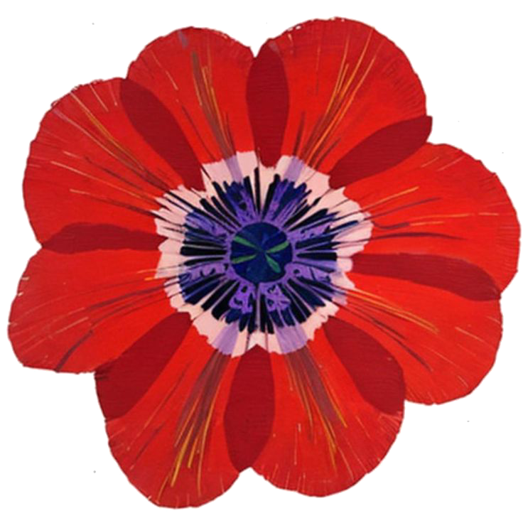
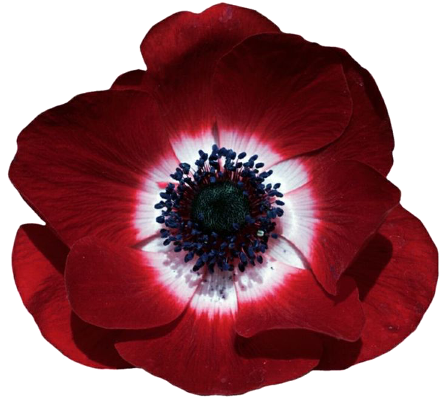
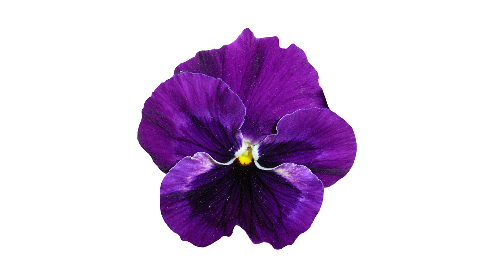

Chaos made wearable.
Silence made visible.
Hand-painted · One of a kind · Signed







Wearable Art · One of a Kind
Exquisite wearable art — where fashion meets fine art. Each Jookh piece carries Roula's signature brushstroke, made to be worn, felt, and lived in.
Every piece is unique — when it's gone, it's gone.
Wearables
Scarves
Bags

Sanctuary Pieces
Each pillow is a unique world — handpainted, handcrafted, and hand-embroidered. Inspired by the people, music, colors, and textiles surrounding Roula's life in Beirut. Every piece from the Emerge collection is signed and numbered by the artist.
All pieces are one-of-a-kind. Each pillow is signed and numbered by Roula Harb.
View P-Lo on Instagram
Paintings · Originals
From the studio,
on canvas.
Roula's painting practice — the source of every brushstroke that ends up on her wearable art.
Each canvas is signed and one of a kind.
When a piece is gone, it's gone.
All paintings are originals, signed by Roula Harb.
Inquire about a painting

About the Artist
After August 4th,
I turned to color.

Roula Harb
Born in Paris · Rooted in Beirut
Fifteen years in fashion and sales, with eyes always turning to the painters — Jackson Pollock, Cy Twombly — and the radical fashion of Rei Kawakubo and Manish Arora.
After the August 4th explosion that devastated Beirut, Roula witnessed catastrophic tragedy — both in her city and in her own life. She turned to color. What emerged was painting as a path to sanity amid chaos.
That journey gave birth to Jookh Couture, P-Lo, and the paintings themselves — each piece a testament to resilience, beauty, and the transformative power of creation.
- 2009Paris · design school
- 2018Beirut atelier opens
- 2020Aug 4th · Jookh born
- 2024P-Lo · Sanctuary pieces
- 2025Paintings unveiled
Every work is a conversation
— Roula Harb
between chaos and beauty.
Get in Touch
To hold one of these works,
write to Roula directly.
Roula delivers worldwide. Reach out through Instagram or WhatsApp to inquire about availability, commissions, or delivery.